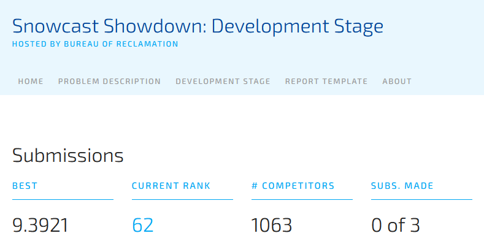
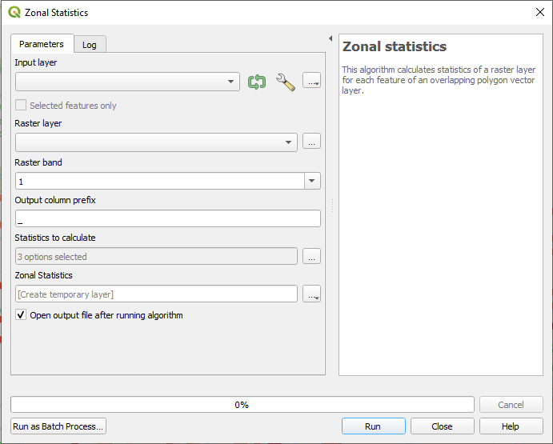
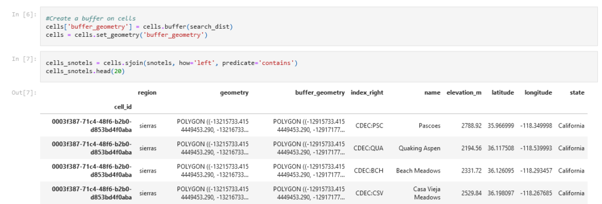
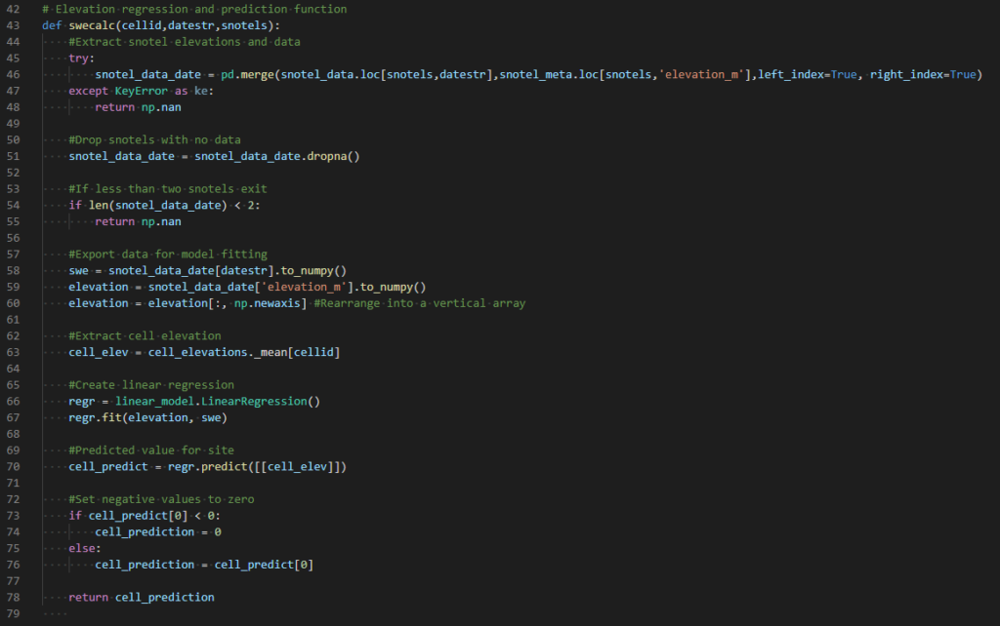
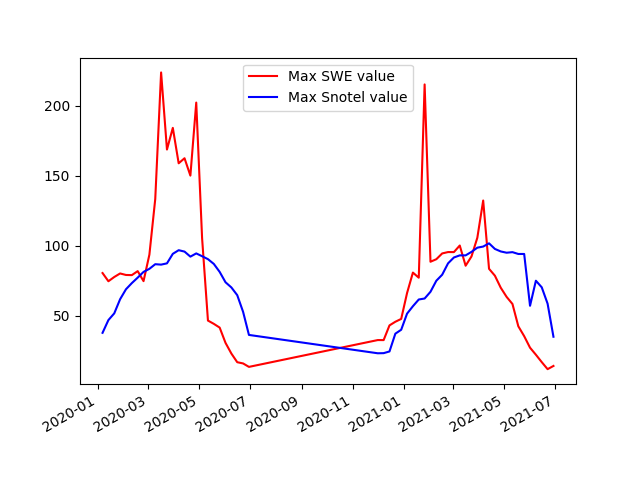
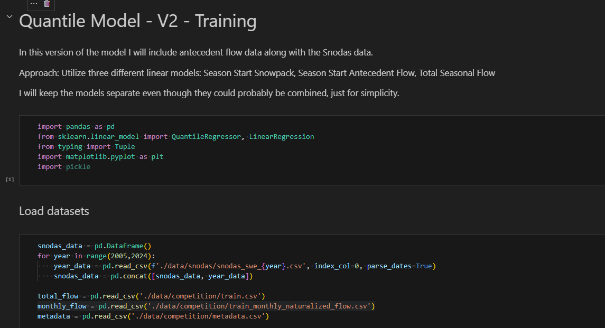
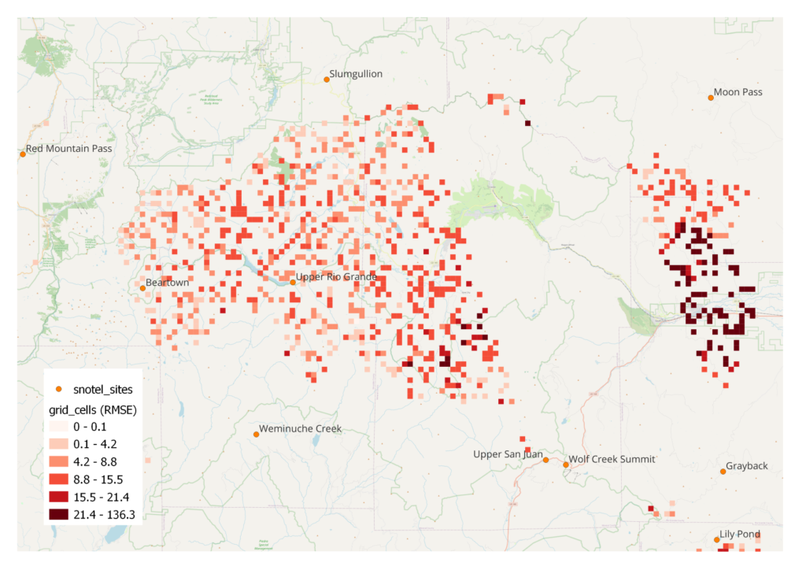

This is the second part of my two part series on a machine learning competition to predict snow water equivalent (SWE). In Part 1, I describe the competition, as well as, my process for coming up with an approach for making SWE predictions at 9,067 locations across the Western US. That approach, sometimes called the “hypsometric” method (Fassnacht et al., 2003, see Part 1 for an overview of the method), is one of the easiest I could find, and it therefore seemed doable given personal time constraints. My expectations were low - I just wanted to see how a simple approach compared to others in the competition. To my surprise, out of about 1000 predictions submitted to the competition, my predictions ranked 62. Here I describe how I computed the SWE predictions and assess the results.

The SWE prediction locations are specified by the competition, but they are not point locations. Instead predictions must be made for 1km x 1km grid cells. The competition provides historical SWE values at many of the grid cell locations, and these values are meant to be used to help train the machine learning model. Ironically, the hypsometric method only utilizes Snotel data, so much of data provided by the competition went unused. A more sophisticated approach would surely utilize all the available data to make new predictions. Nonetheless, the historical grid cell SWE values can be used to test the accuracy of my model (see Results).
To implement the method, I needed to complete three major steps:
- Determine an elevation for each grid cell
- Determine which Snotel sites to associate with each grid cell
- Run the model at each grid cell
I used open source tools for each step. Specifically, QGIS is used to determine grid cell elevation and several different Python libraries are utilized for the other calculations. My Python code is available on Github.
Grid Cell Elevations
The competition provided the spatial geometry (size and location as GeoJSON) for each 1km by 1km grid cell, as well as, historical SWE values for a subset of grid cells (it isn’t clear how this historical SWE data was derived). However, elevations are not provided, and furthermore, the topography inside a particular grid cell could vary quite a bit. Since, a single elevation is the input for my approach, I needed a way of determining an average elevation for each grid cell. Digital elevation models (DEM) are files that contain elevation data for a region. These files, which vary in resolution, can be analyzed using a Python library like Rasterio, or using GIS software. One type of analysis, known as "zonal statistics", is used to calculate an average DEM value within a specified region (like a grid cell). I used zonal statistics to determine an elevation value for each cell.
QGIS can perform a wide range of analyses on DEM data, and I was lucky to stumble across a plug-in that connects to Open Topography, an organization that provides a variety of elevation data from NASA and various satellite campaigns. I ended up downloading 15 arc second “shuttle radar topography mission +”(SRTM+) which has global coverage and a resolution of around 500m. The plug in conveniently enables you to download only a subset of the worldwide data set corresponding to the extent of the grid cells.

Figure 1: The QGIS Zonal Statistics tool
QGIS has a tool to calculate zonal statistics in the Processing Toolbox (Processing Menu -> Toolbox -> Raster Analysis). The DEM and grid cell layers are specified and then a new layer is output by the tool that contains each grid cell ID and corresponding elevation calculated as an average value from the elevations inside the cell. The data is then exported to CSV to be used in the SWE prediction model.
Snotel Sites
After determining the elevation of each grid cell, I needed to know what Snotel sites to associate with each grid cell. The Snotel sites associated with a grid cell are used to build a linear regression for predicting SWE values for that grid cell. It therefore makes intuitive sense to use Snotel sites located close to the grid cell. Initially, I decided to use all the Snotel sites within 50km of each grid cell. However, some grid cells have no Snotel sites within this range, and furthermore, several Snotel sites are needed to create a reasonable regression. Using a search radius of 300 km, I was able to associate at least 6 Snotel sites with each grid cell.

Figure 2: Section of SnotelSearch.ipynb (see github) showing spatial join output
I used Python, specifically Geopandas, to identify what Snotel sites are within the search radius for each cell. Geopandas is like Pandas, but adds support for spatial analysis on vector geometries (points, lines, polygons). There are methods that can be used to determine the relationship between different geometries such as line intersections or if one element is inside of another. One of the most powerful features is a "spatial join". A spatial join is like a table join, but combines data sets based on spatial relationships. Instead of having to use a loop to check if each Snotel site is within 50km of each grid cell, a spatial join can accomplish the same goal, but, presumably, with a much more efficient algorithm.
The work flow for associating Snotels with grid cells was surprisingly simple. First I created a “buffer” around each grid cell (figure 2) with a radius equal to my search radius (50km or 300km). This is a built in method in Geopandas, and it creates a new 50km radius polygon for each grid cell. Then I perform a spatial join to identify which Snotel sites are inside each buffer. Finally, I output the resulting data set for use in the regression analysis.
Running the Model
The last step in making SWE predictions is to actually “run the model” or perform the regression calculations for every grid cell. Each regression is specific to a particular date, and the competition specifies 57 different dates on which to predict SWE - that is 57 dates for each grid cell:
Total regressions to calculate = 9062 grid cells x 57 days = 516534
Initial testing indicated that, on my computer, calculating all the regressions for a single grid cell took around 1 sec. At that rate, it would take about 2 and a half hours to compute all the SWE predictions. In order to speed things up, I tried to execute the regressions in parallel. After all, each regression is independent of the next, so there is no reason to compute them one at a time. Unfortunately, the computer I am using only has two cores, meaning I can only compute two regressions at the same time. Nonetheless, the parallel approach does half the amount of time needed for the computation.

Figure 3: swecalc function from SWEModel_V0.3.py
I implemented the model using Python, including the Multiprocessing library to run parallel computations. The code is organized such that there is a function (figure 3) that takes a grid cell ID, a date, and a list of Snotel sites as input and returns a SWE value. The Snotel sites input in conjunction with a grid cell are determined from the 50km data set unless there is less than three Snotel sites available, in which case the 300km data set is used. Inside the function, the regression is calculated for the input date using Sci-Kit Learn. In some cases, there are Snotel sites that don't have data for a particular data. This reduces the number of Snotel sites that can be used to create a regression, and when less than two sites are available, the function returns a NaN (“Not a Number”). This situation was rare, but did result in a number of NaN SWE values. Since these values cannot be submitted to the competition, they were filled by simply copying values from adjacent dates.
Results
As with any calculation, it is good to do a sanity check on the output. When I first ran the model, there were a few sites with SWE values corresponding to snow depths on the order of 60ft. I went back and found some anomalous spikes in some of the Snotel data. These were probably bad values that were accidentally included in the Snotel data set, and I removed them and re-ran the model. Overall, the values seemed more reasonable, but I made a plot comparing maximum Snotel values to maximum predicted SWE values (figure 4). This approach is a bit unusual since the maximum Snotel value on a particular date might not be a Snotel site that is near the maximum predicted SWE value. Nonetheless, it gives some sense of what might be reasonable for a maximum SWE value. Many of the predicted values are much larger than the maximum Snotel values, and some are upwards of 200 inches SWE (roughly 30ft of snow). Sturm et al. 2010 compiles over 25,000 SWE observations with the maximum being around 120 inches. So, these predictions are likely large overestimates.

Figure 4: Maximum SWE values from model compared to maximum Snotel SWE values
I went ahead and submitted the predicted values to the competition, including the unrealistic values reaching 200 inches. To my surprise, out of about 900 submissions, mine ranked 62. The metric used to evaluate a submission is the Root Mean Square Error. This metric compares my predictions to known values, takes the difference (residuals), and then performs a sum of squares:

RMSE Equation from drivendata.org
My submission has an RMSE of 9.3921 while the competition leader has a RMSE of 2.86.
I can also evaluate my approach using the grid cell training data. As mentioned before, a subset of grid cells have historical data that is meant to be used to train the machine learning model. Since my approach only utilizes Snotel measurements, I can use the historical data to test my model accuracy. I re-ran the model to predict the historical data values and then compared to the actual values. This time, I calculated a RMSE for each grid cell in order to see if there is a pattern to the accuracy of model output. Figure 5 shows the RMSE for each site in the San Juan mountains of southern CO. My impression is that lower elevation predictions are more accurate, but the pattern is not very clear.

Figure 5: Grid cell specific RMSE values in the San Juan mountains of CO
Ongoing Competition
As of May 2022, the Evaluation Stage of the competition is still ongoing. In contrast to the "development stage" (which I competed in), the evaluation stage tests models using live data and awards prizes totaling $500,000. The current leader is showing a RMSE of 3.4541. I look forward to seeing the winning approaches after the competition ends.
References
Fassnacht, S. R., Dressler, K. A., & Bales, R. C. (2003). Snow water equivalent interpolation for the Colorado River Basin from snow telemetry (SNOTEL) data. Water Resources Research, 39(8).
Sturm, M., Taras, B., Liston, G. E., Derksen, C., Jonas, T., & Lea, J. (2010). Estimating snow water equivalent using snow depth data and climate classes. Journal of Hydrometeorology, 11(6), 1380-1394.